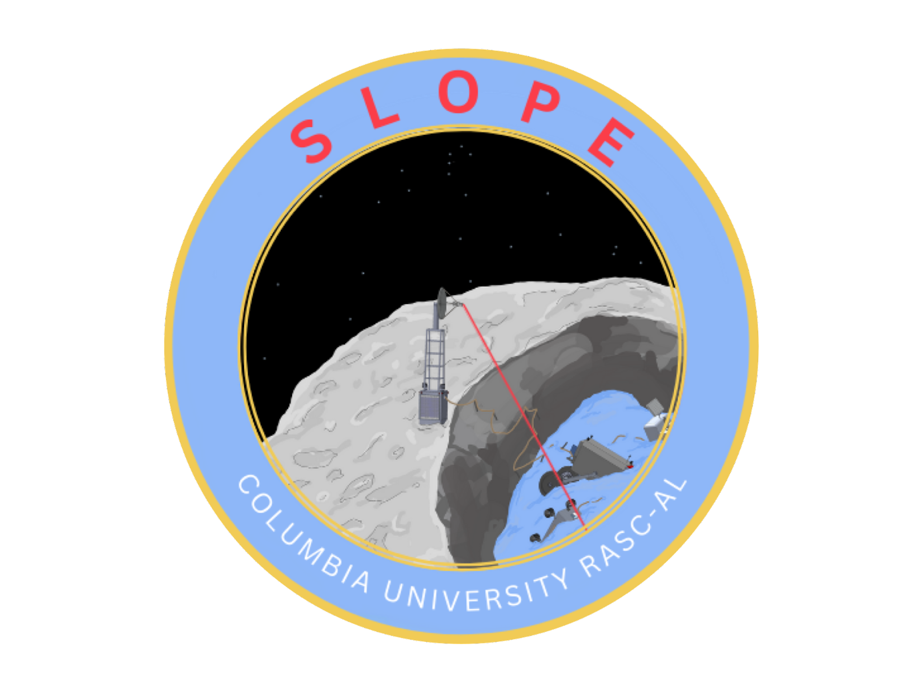
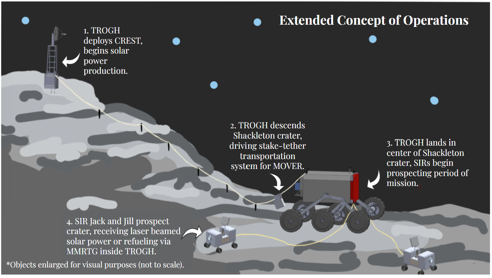

NASA RASC-AL Lunar Crater Prospecting Mission Proposal
Team-led systems architecture and competition proposal development for a tethered multi-element lunar exploration concept.

For the NASA RASC-AL proposal competition, I led the development of a large-scale crater prospecting mission concept designed for extreme lunar south pole terrain.
Rather than relying on a single rover architecture, our team proposed a multi-element tethered system: a crater-rim power and communications base, twin mobile prospectors for volatile scouting, and a transport module to shuttle samples between the rim and permanently shadowed regions.
This experience emphasized early-stage mission architecture, systems integration, and communicating a feasible concept under real competition constraints.
I produced many of the mission visuals, including CAD renderings, subsystem layouts, and block-level architecture diagrams used throughout the proposal package.

As team lead, I learned how critical structure and accountability are in long-term engineering proposal work.
Because the competition deadline was months away with no intermediate milestones, I created a detailed Gantt-based schedule with internal design reviews and buffer periods to prevent last-minute cramming.
I focused heavily on building ownership across the team by delegating subsystem responsibility, encouraging independent initiative, and creating an environment where members felt invested in the mission’s success.
Under my leadership, our team grew to more than double its original size, supported by an encouraging culture of collaboration, technical ambition, and consistent communication.
In parallel, I contributed directly to rover CAD, mission budgets (mass, power, volume, cost), and systems-level integration across the architecture.
In addition to engineering development, I created key proposal deliverables to communicate our concept clearly, including the mission patch design and helped with a mission operations video.
I also gained experience reaching out to external experts for feedback and technical input, strengthening the realism of our architecture and assumptions.
By the end of the competition cycle, our expanded team produced a complete
written proposal and
mission concept video submission.